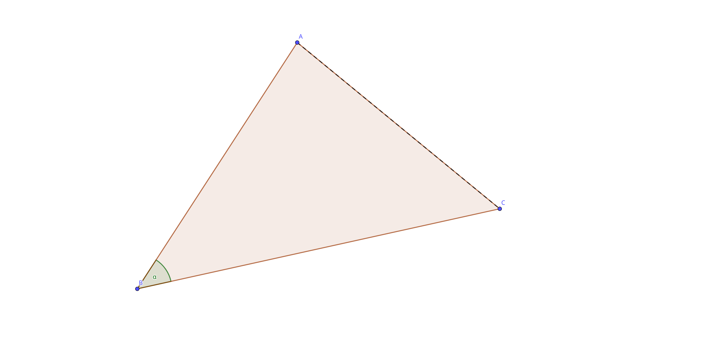
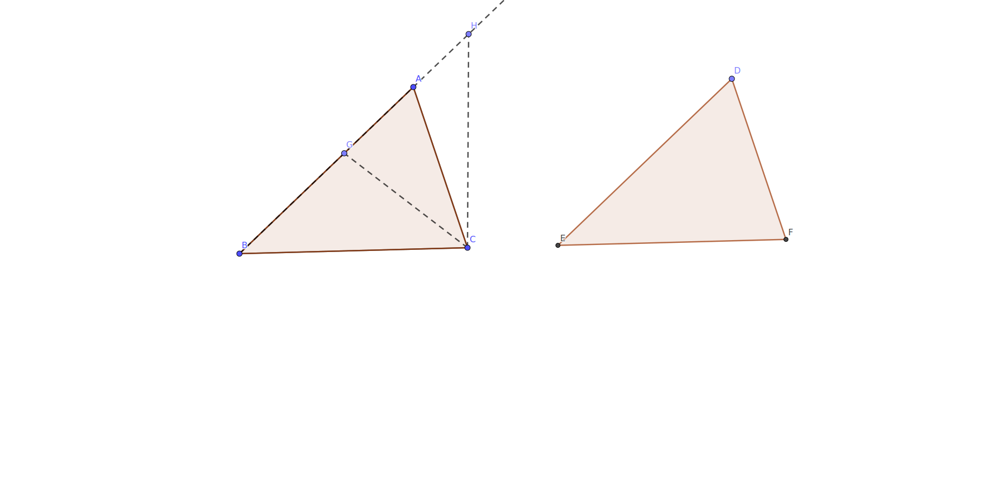

数学的学习，我认为最重要的不是＂学＂，而是说服你自己，我到底可以相信这些定理吗？在多大程度上，他们是成立的？当你写下数学符号的时候，需要注意你引用这些定理的前提条件．盲目的使用定理会让你失去学习数学最重要的灵魂－－－逻辑．
如果每一个问题，都去追寻到源泉，这是不现实的．首先，我们也许暂时没法理解，所以我们需要把和这个问题相关的定理暂时放在一边，再次，如果每次证明都要寻根索源，那证明将显得非常臃肿，反而把要证明的问题冲淡了．所以，我在开篇这里，首先把文中需要的用到的定理在这里先证明，以便于后面直接引用，这和欧几里得几何的方式是一样的．
这里所谓的＂基础＂，是指无需证明，你只能接受的前提．这些前提的改变，会改变整个定理的面貌．这个基础，包含了定义，公设，公理．
定义，公理，公设，从某种方面来看，都是一样的，他们都是假设，但你要接受这些为真．我想强调一点，以后在使用欧几里得定理的时候，我们默认了这些定义，公理，公设 ，如果以后我们碰到的问题是和这些前提矛盾的，我们将使用新的假设，那么有些欧几里得的定理就可能不适用了．
定义
1. 点
2. 直线
3. 线段
4. 平面
5. 圆欧几里得平面几何的五条公理（公设）是：
1. 从一点向另一点可以引一条直线。
2. 任意线段能无限延伸成一条直线。
3. 给定任意线段，可以以其一个端点作为圆心，该线段作为半径作一个圆。
4. 所有直角都相等。
5. 若两条直线都与第三条直线相交，并且在同一边的内角之和小于两个直角，则这两条直线在这一边必定相交。欧几里得还提出了五个一般概念，也可以作为公理。
1. 与同一事物相等的事物相等。
2. 相等的事物加上相等的事物仍然相等。
3. 相等的事物减去相等的事物仍然相等。
4. 一个事物与另一事物重合，则它们相等。
5. 整体大于局部。所谓定理，就是依据上面这些假设，推理出来的命题．我们可以用上面的假设，来推理一个命题为真或者为假．
平行线的性质
严格的说，这一条不算定理，因为它其实就是公设里面第５条的等价形式．如下图所示：
Figure 1: 平行线
符号说明，\(\pi\)表示两个直角的和．
根据公设5
\(\angle\alpha\) + \(\angle\beta\) < \(\pi\)，那么：
直线AC和直线AB相交
若\(\angle\varepsilon\) + \(\angle\gamma\) = \(\pi\), 那么：
直线AB和直线FG不相交
因为如果直线AB和直线FG相交
那么根据公设5：
\(\angle\varepsilon\) + \(\angle\gamma\) < \(\pi\) 也成立．
根据前提，\(\angle\varepsilon\) + \(\angle\gamma\) = \(\pi\)也成立．
根据公理5，整体大于局部．
两个角度的和要么小于\(\pi\)，要么等于\(\pi\)，只能是其中之一．否则，整体将等于局部．
所以，假设AB和FG相交不成立．AB和FG必平行．
这里有一个很有趣的问题，我们看看以下的证明有什么问题．
若\(\angle\varepsilon\) + \(\angle\gamma\) = \(\pi\), 那么：
直线AB和直线FG不相交
因为如果直线AB和直线FG相交
那么根据公设5：
\(\angle\varepsilon\) + \(\angle\gamma\) < \(\pi\)．
这和\(\angle\varepsilon\) + \(\angle\gamma\) = \(\pi\)相矛盾．
所以，AB和FG必平行
这里的问题是，注意看公设5，它只是说了角度小于\(\pi\)会导致相交，并没有说，相交会导致角度和小于\(\pi\)，因此，根据公设5： \(\angle\varepsilon\) + \(\angle\gamma\) < \(\pi\)． 这个是错误的．
顺便推出对顶角相等，同位角相等．
根据直角和的定义：
\(\varepsilon + \zeta = \pi\)
\(\delta + \zeta = \pi\)
根据等量减等量依然相等
\(\varepsilon = \pi - \zeta\)
\(\delta = \pi - \zeta\)
所以
\(\varepsilon = \delta\)
依据平行线的性质：
\(\varepsilon + \gamma = \pi\)
依据直角和的定义：
\(\gamma + \beta = \pi\)
同样的方式可得：
\(\varepsilon = \beta\)
\(\beta\)和\(\eta\)是对顶角
\(\beta\) = \(\eta\)
\(\varepsilon\) = \(\eta\)
Theorem 1 (等腰三角形) 如果一个三角形的两条边相等，那么他们对应的角也相等
已知：\(\Delta\)AEB, AE = BE
求证：\(\angle\) A = \(\angle\) B
Proof. 翻转\(\Delta\)AEB, 形成一个新的三角形，让这个新的三角形的E点和原来的三角形E点重合，因为AE = BE, 我们可以让B点和A点重合，因为两个三角形的\(\angle\)E相等，新三角形的A点会和原来的三角形的B点重合，三角形的三个顶点重合，那么这两个三角形完全重合，根据公理4, 他们相等．因此，\(\angle\)A = \(\angle\)B
Theorem 2 (大边对大角) 三角形大边对大角
已知：BC > BA
求证：\(\angle\) BAC > \(\angle\) C
Figure 2: 角边关系
证明外角大于内角
Proof. 如图： 在BC上截取一点D，使得BD = BA
根据定理1,
\(\angle\)BAD = \(\angle\)BDA
根据外角大于内角(有待证明在前面)
\(\angle\)BDA > \(\angle\)C
根据公理５
\(\angle\)BAC > \(\angle\)BDA
因此
\(\angle\)BAC > \(\angle\)C
Lemma 1 (大角对大边) 在一个三角形中，如果一个角大于另一个角，那么大角对应的边也大于小角对应的边
以知： \(\angle\)BAC > \(\angle\)C
求证：BC > BA
想把建立图片的联系，发现一定要给图片命名，只是给标签不行．
Proof. 如上图 2
\(\angle\)BAC > \(\angle\)C
若BC \(\leq\) BA
BC < BA 则：
根据定理 2
\(\angle\)BAC < \(\angle\)C
若 BD = BA
根据定理 1
\(\angle\)BAC = \(\angle\)C
因此，若 BC \(\leq\) BA，那么：
\(\angle\)BAC \(\leq\) \(\angle\)C
这和\(\angle\)BAC > \(\angle\)C 相矛盾
故必有：
BC > BA
这个证明用了反证法，以条件为真，得出结果和前提矛盾，因为这是一一对应的关系．不是一一对应关系，那该证明可能很复杂．比如
Theorem 3 (SAS定理) 若两个三角形的两条边相等，他们对应的夹角也相等，那么这两个三角形全等．
如图：

Proof. 如上图：
给定\(\Delta\)ABC的两条边, AB和BC，还有一个夹角\(\alpha\)，只能作出一个三角形．
那么，给定同要的条件，我们在其他地方画的三角形不过是这个三角形的复制品.
证毕
你可以想象，在给定的条件下，同时画两个三角形，你把这两个三角形的对应边和角 重合起来．比如\(\Delta\)ABC和\(\Delta\)\(A{\prime}B{\prime}C{\prime}\)，AB和\(A{\prime}B{\prime}\)重合， 因为\(\alpha\) = \(\alpha\)，BC和\(B{\prime}C{\prime}\)也可以重合，两个三角形完全重合
故：\(\Delta\)ABC\(\cong\)\(\Delta\)\(A{\prime}B{\prime}C{\prime}\)
Theorem 4 (SSS定理) 如果两个三角形的三条边相等，那么这两个三角形全等．
Proof. 如图：给定三角形的三条边，只能作出两个三角形，由于圆的对称性，如果把下面的半圆以两个圆的圆心的连线为准线，向上翻转，那么两个圆各自和各自的上半圆重合，因此他们的交点也重合，故，两个三角形重合．因此，给定三角形的三边，只能作出一个三角形，因此，三边相等的三角形必重合．
也可以用SAS定理来证明SSS定理
如上图
可以用等腰三角形的性质得到两条边的夹角相等，加上条件，两条边是相等的
根据SAS定理
两个三角形全等．
Theorem 5 (ASA定理) 如果两个三角形的两个角相等，他们所夹的边也想等，那么这两个三角形全等．

Proof. 如图所示：\(\Delta\)ABC 和 \(\Delta\)DEF
以知：\(\angle\)B = \(\angle\)E
\(\angle\)ACB = \(\angle\)F
BC = EF
求证：\(\Delta\)ABC\(\cong\)$DEF